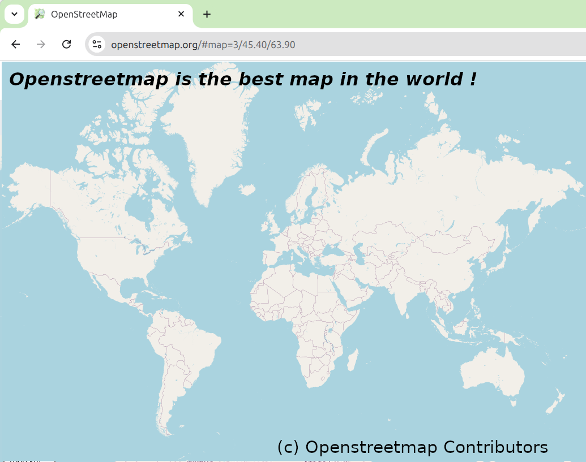
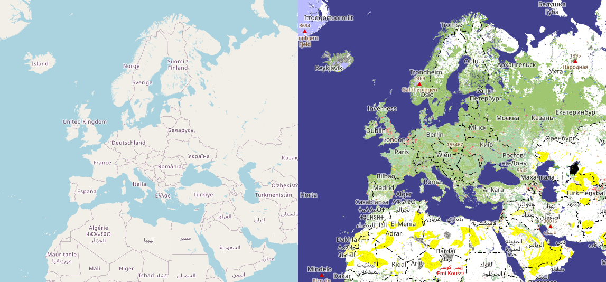

About OpenLandcoverMap
The official map on OpenStreetMap.org appears empty and devoid of character at lower zoom levels (z0-z8). This project, OpenLandcoverMap, serves as an alternative rendering to demonstrate how cartographic generalization can create a much richer and more informative map.
The Problem with Raw Data
Other maps are such shapes, with their islands and capes!
But we've got our brave captain to thank,"
(So the crew would protest) "that he's bought us the best —
A perfect and absolute blank!"
Why does the map look so empty? OpenStreetMap contains over 10 billion objects, and it's simply impossible for any rendering engine to display all of them at once. The real challenge lies in selection and simplification, an area where the standard renderer struggles.
For example, you cannot simply select cities to display based on population size. A small village in a sparsely populated region is often more locally significant than a large city in a densely populated area like Europe. Similarly, for mountains, absolute elevation is not as important as relative prominence. The most interesting peaks are those that are the tallest within a certain vicinity.
Furthermore, many polygonal features like forests, fields, and swamps are mapped as countless small, fragmented pieces. Without a generalization process, they are too small to be visible on a world map.
Note: what you see on z0-z4, is not even OpenStreetMap data, despite copyright notice: it's actually Natural Earth -- public domain generalized continents' outlines and national borders.
Generalization
In this project we use traditional, well-known approaches to cartographic generalization:
- Inhabited Places — Constant data density;
- Mountain Peaks — Discrete Isolation;
- Landcovers — Dominant feature per hexagon;
- Water Bodies — Buffer & merge.
Also, to help us out, we use Uber's H3 hexagonal grid system.
Inhabited Places (cities and towns)
For the inhabited places, the most simple generalization method — display constant number of elements per area unit — works pretty well. Instead of actual square inch, we use H3 hexagons of resolution 1. Then we rank each populated place by its population relative to other places within the same hexagon. This ensures that the most significant settlements in a large region are shown first.
Benefits:
- even small cities in a sparsely populated region are displayed;
- if there are several big cities nearby, they are still visible.
Note: each place can still be shown with a symbol corresponding to its population and administrative status.
Mountain Peaks

For mountain peaks the generalization method described above does not really work. There are lots of "subsidiary" peaks nearby "main" peaks, which should be rather suppressed on a generalized map. For example, South Peak is located approximately 130 meters from the main Everest summit, and only 100 meters below it, and is definetly not worth of showing on z0-z8.
So for mountain peaks we use another generalization method: Discrete Isolation. Put simply, Discrete Isolation is the distance from the given point to the nearest higher point. This computationally intensive process is optimized using a hierarchical approach. We first process peaks within each resolution 1 hexagon separately before calculating discrete isolation for the highest peaks across hexagons.
This algorithm produces quite good results: not only major global peaks like Everest (8848 m) or Mont Blanc (4805 m) are highlighted, but also significant local summits, such as Dzyarzhynskaya Hara (345 m), the highest point in Belarus.
Landcovers
The idea for landcovers generalization is that we can find a dominant feature (or landcover type) for certain area.
For each 6-km H3 hexagon (resolution 6), we identify the dominant landcover type (e.g., landuse=* or natural=*) based on the largest area covered. Before this, we normalize tags, for example, converting landuse=forest to natural=wood. A feature must cover at least 1% of the hexagon's area (10% for built-up areas) to be considered. These hexagons are then merged to form large, cohesive landcover polygons.
Note that we do not have any predefined classification of landcovers, but we find features that are actually used is OSM. See the full list of supported landcover tags on the Tag Usage page.
Water Bodies
For water bodies another traditional method is used. We select water bodies larger than 20 sq. km, buffer them to merge nearby water bodies,
and then shrink them back. This process simplifies complex coastlines and merges groups of lakes/reservoirs and wide rivers,
taged in OSM with natural=water.
Rivers

Raw river data in OpenStreetMap is far too detailed to be useful on a world map, which would otherwise be cluttered with countless tiny streams. The goal of river generalization is to create a simplified, recognizable river network showing only the most significant waterways.
We use a modified version of the algorithm proposed by Jochen Topf in his blog post Generalizing river networks and implemented in osm2pgsql-gen.
Jochen Topf suggests using a "non-decreasing width" as the rank. While the idea of a non-decreasing rank seems correct, using width as the criterion is unsatisfactory. Firstly, rivers have local widenings that have no relation to their "cartographic significance." Secondly, in the proposed algorithm, when a river splits into distributaries, all of them inherit this non-decreasing width. This is undesirable because it makes all distributaries appear significant, leading to thick, messy, and ugly river lines on the map. Thirdly, width is specified (via tag or natural=water polygons) not for all significant rivers, especially outside Europe, which causes them to sharply lose significance, which is undesirable.
Therefore, this project uses a rank based on the edge's position in the river graph, with width used only as an auxiliary parameter. To achieve this, the algorithm follows a two-stage process: first, we determine the width of every river segment, and then we calculate its rank to determine its importance.
Stage 1: Width Calculation
Since the width attribute is not usually set for waterways, we have to compute it. For wide rivers mapped as polygons (e.g., natural=water), the width is estimated using the PostGIS function ST_MaximumInscribedCircle, which finds the diameter of the largest possible circle that can fit inside the water body polygon. This calculated width is then spatially transferred to any river lines that flow through these areas. Finally, these known width values are propagated downstream along the river network to fill in any gaps.
Stage 2: Ranking and Generalization
Once widths are known, the river network is treated as a directed acyclic graph for ranking. After simplifying the graph by merging non-branching segments, the algorithm performs two critical tasks using the calculated width:
- Cycle Breaking: OSM data sometimes contains errors that create impossible loops (a river flowing in a circle). The algorithm detects these and breaks them by removing the "weakest link"—the segment with the smallest
width. - Ranking: A rank is calculated to model the river's significance. Source rivers (headwaters) start with a
rank=1. When rivers merge, their ranks are summed, thus making the downstream river more significant. Conversely, when a river splits into distributaries, the main channel inherits most of the parent's rank, while minor offshoots are assigned a rank of 1, so that the total sum of ranks is preserved.
Determining the "main channel" of the river is a bit tricky. The first idea is just to select the offspring with the highest width value, but surprisingly it does not always produce good results. We cannot fully rely on the waterway relation either, because those relations are present for major rivers only and are sometimes incomplete. However, using both factors together gives acceptable results. The algorithm first prioritizes segments that have themain_streamrole in awaterwayrelation. If no segments have this role, it falls back to choosing the widest channel as the main one.
The modified version of osm2pgsql-gen with this implemented algorithm is available in the repository at https://github.com/Zkir/osm2pgsql-patched/tree/waterway-gen-patch.
Technology Stack
This project is built on a foundation of powerful open-source tools:
- PostgreSQL with PostGIS for spatial data storage and analysis.
- h3-pg for H3 grid support within PostGIS.
- osm2pgsql for importing OSM data.
- A series of custom SQL scripts to perform the generalization logic.
- Mapnik and Tilemill for map rendering.
- Python for various scripting and automation tasks.
- Make to orchestrate the entire data processing and build pipeline.
License and Data Availability
The source code for the entire generalization process is available under the permissive MIT license. You can find the repository on GitHub.
The generalized landcover data generated by this project is also available for download. Please visit the Downloads page to access the data.
A Final Thought
We hope that the awesome people responsible for the slippy map at openstreetmap.org will look at our map, see what's possible, and think hard about the future of cartographic representation in the project. 
Discussion
All questions can be asked in the Openstreet Community forum. Any feedback is welcome!